Panduan pengguna
Alur lengkap docking di VirmoDock, dari mengimpor protein sampai laporan (PDF, Word, atau HTML interaktif) — semuanya di dalam satu aplikasi, dipandu lima langkah.
Tampilan jendela
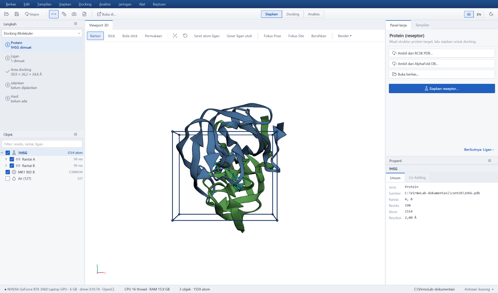
| Bagian | Fungsi |
|---|---|
| Menu (atas) | Delapan menu: Berkas, Edit, Tampilan, Siapkan, Docking, Analisis, Alat, Bantuan. Arahkan tetikus ke sebuah item untuk melihat keterangannya di bilah status. |
| Toolbar | Buka berkas, simpan, ambil dari RCSB, interaksi 3D, ukur jarak, gambar 3D, laporan, “Buka di…” program lain; di tengah tombol ruang kerja Siapkan · Docking · Analisis; di kanan mode gelap. |
| Langkah (kiri atas) | Lima langkah: 1 Protein → 2 Ligan → 3 Area docking → 4 Jalankan → 5 Hasil. Tanda centang = langkah selesai; teks kecil = status (mis. “3 siap”). Klik untuk membuka langkah itu. |
| Objek (kiri bawah) | Semua objek: protein → rantai → residu, ligan, air, ion, Ligan siap docking, hasil pose. Centang = tampil/sembunyi; klik kanan = gaya, warna, fokus, ganti nama, ekspor, hapus. |
| Tengah | Tab Viewport 3D, Hasil, Diagram 2D, Sifat Ligan, Statistik (tab yang tampil mengikuti ruang kerja). |
| Panel kerja (kanan) | Isi langkah aktif: penjelasan satu kalimat, tombol aksi, tombol utama biru, dan tautan Berikutnya ›. Tab Tampilan berisi gaya ala PyMOL; tab Interaksi muncul di ruang Analisis. Properti di bawahnya menampilkan rincian objek terpilih. |
| Bilah status (bawah) | GPU dan driver, jumlah objek/atom, folder proyek, dan tombol Antrean: … ▴ untuk membuka panel Antrean job / Log / Pesan. |
Ruang kerja
Tiga ruang kerja mengatur tab dan panel yang tampil agar layar tidak penuh: Siapkan (Ctrl+1, langkah 1–3), Docking (Ctrl+2, langkah 4 + tab Hasil), Analisis (Ctrl+3, semua tab + panel Interaksi). Ruang kerja berpindah otomatis mengikuti langkah, dan sebaliknya.
Panel bisa dipindah, ditumpuk, atau dilepas; tata letak tersimpan otomatis. Kembalikan dengan Tampilan › Atur ulang tata letak. Panel yang tertutup dibuka lagi dari Tampilan › Panel. Mode gelap: Ctrl+T.
Halaman sambutan
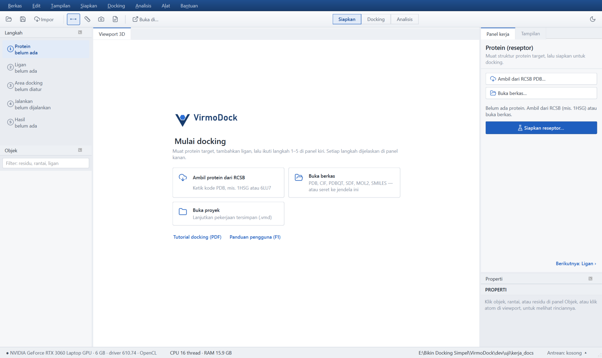
Pilih Ambil protein dari RCSB, Buka berkas (atau seret berkas ke jendela), Buka proyek, atau Proyek terakhir. Tautan di bawahnya membuka tutorial PDF dan panduan ini.
Langkah 1 · Protein
- Muat protein: Ambil dari RCSB PDB… di Panel kerja (Ctrl+Shift+P, ketik mis.
1HSG), Ambil dari AlphaFold DB… (lihat di bawah), atau Buka berkas… (Ctrl+O: PDB, PDBQT, mmCIF, SDF, MOL2, SMILES). Struktur dipecah otomatis menjadi protein, ligan asli, air, dan ion. - Klik tombol biru Siapkan reseptor… (Ctrl+Shift+1).
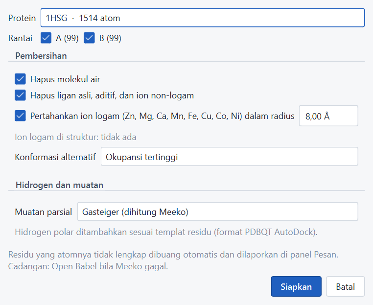
- Pilih protein dan rantai; hapus air, hapus ligan asli & aditif, pertahankan ion logam (Zn, Mg, Ca, Mn, Fe, Cu, Co, Ni) dalam radius dari ligan asli (0 = semua).
- Konformasi alternatif: okupansi tertinggi (disarankan) atau selalu altloc A. Muatan: Gasteiger dihitung Meeko (disarankan) atau muatan templat residu.
- Hasilnya objek “… (siap)”; berkas
reseptor/reseptor.pdbqtdanlaporan_prep.txttersimpan di proyek. Residu yang atomnya tidak lengkap dibuang dan dilaporkan; bila Meeko gagal, Open Babel dipakai otomatis.
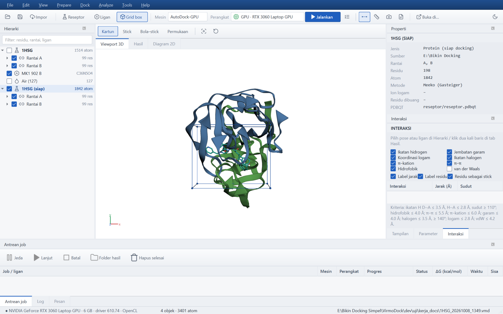
Protein dari AlphaFold DB
Untuk target yang belum punya struktur kristal. Ketik kode UniProt (mis. P00918) atau nama protein/gen (mis. ACE2), pilih organisme, klik Cari, pilih satu hasil, lalu Impor.
- Protein diwarnai menurut pLDDT (keyakinan per residu): biru tua > 90, biru muda 70–90, kuning 50–70, jingga < 50. Ringkasan pLDDT tampil di Properti dan panel Pesan; warna ini juga bisa dipilih di Tampilan › warna pLDDT (AlphaFold).
- Ujung N/C yang tak beraturan (pLDDT < 50) dipangkas bawaan karena bisa menutupi kantong. Bisa diubah ambangnya, diterapkan di mana saja, atau dimatikan.
- Deteksi kantong P2Rank otomatis memakai konfigurasi
alphafold. Setelah grid box diatur, VirmoDock melaporkan pLDDT residu di dalam kotak dan memperingatkan bila rendah. - Model AlphaFold tidak memuat ligan, kofaktor, atau ion, dan rantai samping kantong bisa berbeda dari bentuk terikat. Validasi dengan ligan pembanding bila ada, pertimbangkan residu fleksibel, dan sebutkan entri/versi model di metode (otomatis di laporan).
Langkah 2 · Ligan
Panel kerja menyediakan Ambil dari PubChem… (Ctrl+Shift+L, satu nama/CID per baris), Dari SMILES…, dan Buka berkas / folder…. Lalu klik Siapkan ligan… (Ctrl+Shift+2).
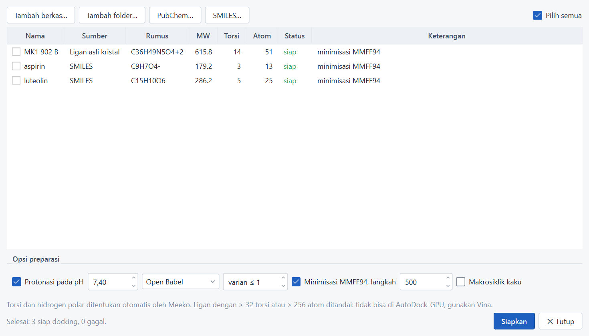
- Opsi: protonasi pada pH (bawaan 7,4) dengan Open Babel atau Dimorphite-DL, minimisasi MMFF94, makrosiklik kaku/fleksibel.
- Dimorphite-DL memakai aturan pKa per gugus. varian ≤ 1 = satu keadaan pada pH tepat; varian ≤ 2–8 = semua keadaan protonasi pada pH ± 1, masing-masing jadi ligan terpisah bernama
nama [v1],[v2], … sehingga bisa didocking semua dan dibandingkan. Catatan: Dimorphite-DL cenderung menganggap fenol/katekol terdeprotonasi; untuk flavonoid, Open Babel biasanya lebih wajar. Periksa kolom muatan. - Status: siap, peringatan (mis. > 32 torsi atau > 256 atom — tidak bisa di AutoDock-GPU, pakai Vina), gagal (dengan alasan). Satu ligan gagal tidak menghentikan yang lain.
- Ligan siap masuk grup Ligan siap docking di panel Objek.
Langkah 3 · Area docking (grid box)
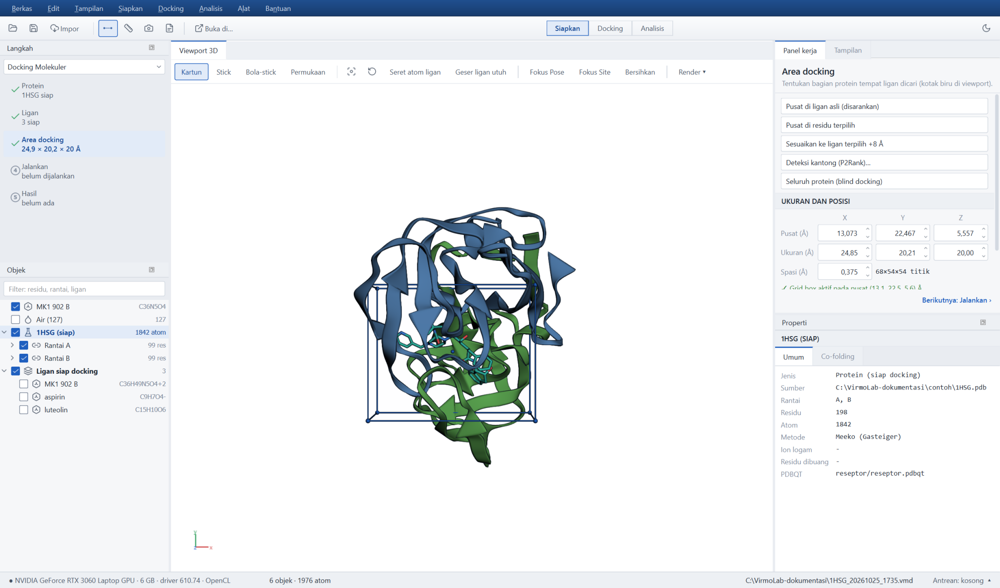
- Bila struktur berisi ligan asli, kotak dipusatkan otomatis padanya (aditif kristalisasi seperti GOL, EDO, SO4 diabaikan).
- Tombol: Pusat di ligan asli (disarankan), Pusat di residu terpilih (klik atom atau pilih residu di Objek, Ctrl+klik untuk banyak), Sesuaikan ke ligan terpilih +8 Å, Deteksi kantong (P2Rank)…, Seluruh protein (blind docking). Semua juga ada di menu Siapkan.
- Deteksi kantong (P2Rank): untuk protein tanpa ligan asli (mis. model AlphaFold atau struktur apo). P2Rank (pembelajaran mesin) mencari kantong pengikatan dalam ±5–30 detik; kantong ditandai bola oranye bernomor di viewport dan dicantumkan dalam tabel (skor, probabilitas, residu). Pilih satu lalu Pakai kantong ini: kotak dipusatkan di kantong, ukuran = sebaran residu kantong + 4 Å (16–30 Å). Pada 1HSG, kantong #1 berjarak 0,8 Å dari pusat indinavir kristal.
- Residu fleksibel… (menu Siapkan, atau Atur… di langkah 4): centang 2–6 rantai samping kantong yang boleh berotasi selama docking (calon diurutkan menurut jarak ke ligan asli; Gly/Ala/Pro tidak ditawarkan; maksimal 8). Berlaku untuk AutoDock-GPU dan Vina (bukan AutoDock4). Rantai samping pada tiap pose tampil sebagai objek Pose n · residu fleksibel, dan interaksi dihitung dengan posisi itu. ΔG dengan residu fleksibel tidak sebanding langsung dengan docking kaku — bandingkan ligan dalam pengaturan yang sama. Kembali ke reseptor kaku mematikannya; menyiapkan ulang reseptor juga mematikannya.
- Ukuran dan posisi: pusat X/Y/Z, ukuran, spasi, jumlah titik grid. Peringatan muncul bila > 126 titik per sumbu atau > 30 Å.
- Dengan mouse di viewport: Shift+seret = geser kotak; Shift+gulir = ukuran; Alt+gulir = satu sumbu (pilih sumbu dengan X/Y/Z). G menampilkan/menyembunyikan kotak.
Langkah 4 · Jalankan docking
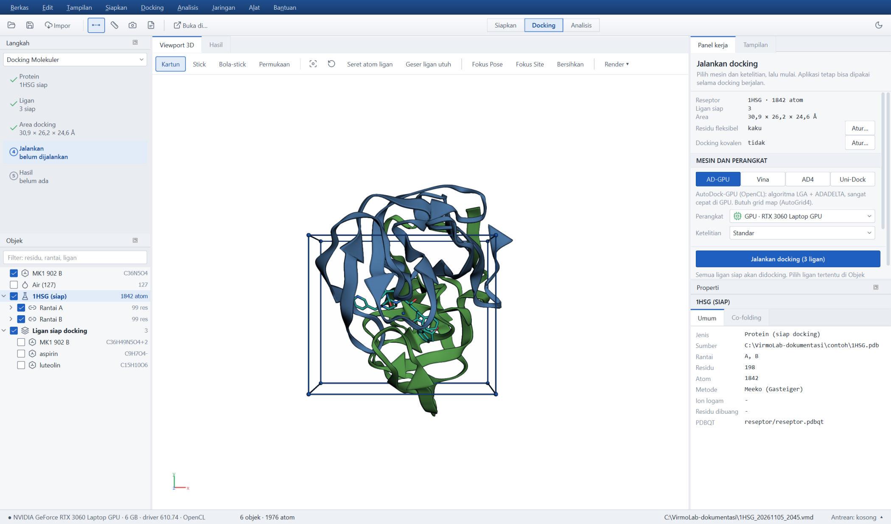
| Mesin | Kapan dipakai |
|---|---|
| AD-GPU (AutoDock-GPU) | Laptop dengan GPU OpenCL. Sangat cepat; cocok untuk banyak ligan. |
| Vina (AutoDock Vina) | Tanpa GPU, atau ligan besar (> 32 torsi). |
| AD4 (AutoDock4) | Perbandingan dengan penelitian lama (lambat). |
- Ketelitian: Cepat, Standar, atau Teliti (atau preset tersimpan Anda) — langsung diterapkan.
- Lanjutan ▸ membuka parameter rinci (jumlah run, evaluasi, exhaustiveness, jumlah pose, rentang energi, thread CPU, seed) dan tombol simpan preset. Seed tetap = hasil bisa diulang. Jendela pengaturan yang sama: Docking › Pengaturan docking… (Ctrl+D).
- Perangkat: bila laptop punya lebih dari satu GPU OpenCL (mis. Intel + NVIDIA), semuanya muncul; GPU dengan VRAM terbesar dipilih sebagai bawaan.
- Klik Jalankan docking (n ligan) atau tekan F5. Semua ligan siap didocking; untuk sebagian saja, pilih ligan itu di panel Objek dulu.
Antrean job
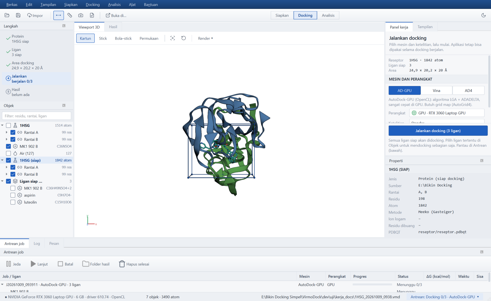
- Panel Antrean (tombol Antrean: … ▴ di bilah status atau Ctrl+J) menampilkan status, progres, ΔG terbaik, waktu, dan perkiraan sisa per ligan. Panel menutup sendiri bila semua job sukses.
- Jeda (setelah ligan yang sedang berjalan), Lanjut, Batal — di panel atau menu Docking. Jendela boleh di-minimize; notifikasi Windows muncul saat selesai.
- Bila GPU gagal (OpenCL), job otomatis dilanjutkan dengan Vina di CPU; alasannya ditulis di panel Pesan.
- Menutup aplikasi saat docking: job menjadi Dijeda dan bisa dilanjutkan tanpa mengulang ligan yang sudah selesai.
Langkah 5 · Hasil
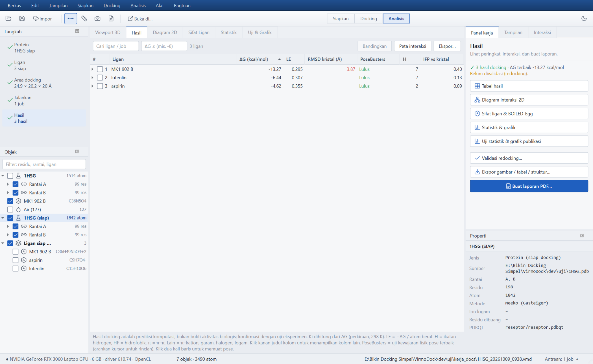
- Kolom bawaan: #, Ligan, ΔG (kcal/mol), LE (efisiensi ligan), RMSD kristal (hijau ≤ 2 Å), PoseBusters, H (ikatan hidrogen). Klik kanan judul kolom untuk menampilkan kolom lain: Ki perkiraan, klaster, RMSD referensi, hidrofobik, π, interaksi lain, mesin, job.
- Sortir dengan klik judul kolom; saring dengan nama atau batas ΔG. Klik dua kali baris untuk memuat pose ke viewport.
- Menu Analisis › Tabel hasil (Ctrl+R).
Interaksi 3D
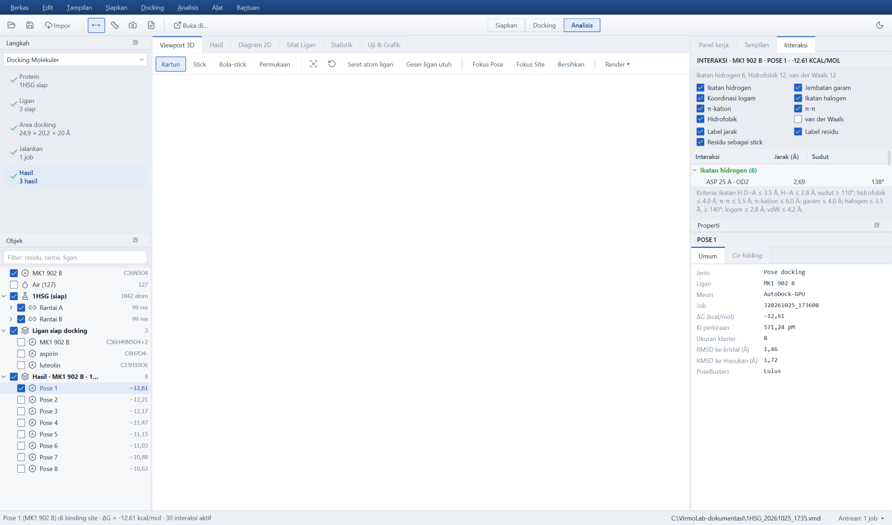
Tab Interaksi (kanan, ruang Analisis) menampilkan daftar per jenis beserta jarak dan sudut; klik baris untuk memfokuskan residu. Centang jenis yang ingin ditampilkan; opsi label jarak, label residu, residu sebagai stick. I menampilkan/menyembunyikan interaksi. Warna: ikatan hidrogen, hidrofobik, π–π, π–kation, jembatan garam, ikatan halogen, logam. Kriteria: Metode & kriteria.
Kontribusi energi per atom
Analisis › Kontribusi energi per atom (K) mewarnai atom pose aktif: hijau = menguntungkan, merah = merugikan; bola makin besar makin besar kontribusinya. Dihitung dari suku antarmolekul fungsi skor AutoDock Vina (gauss, repulsi, hidrofobik, ikatan H) per atom ligan; totalnya mendekati “Final Intermolecular Energy” Vina. Berguna untuk melihat bagian molekul yang perlu dimodifikasi.
Sematkan pose
Membuka pose lain biasanya menyembunyikan pose sebelumnya. Klik kanan pose di panel Objek › Sematkan agar pose itu tetap tampil (ikon pin) — mis. untuk membandingkan pose terbaik dua ligan di satu viewport.
Diagram interaksi 2D
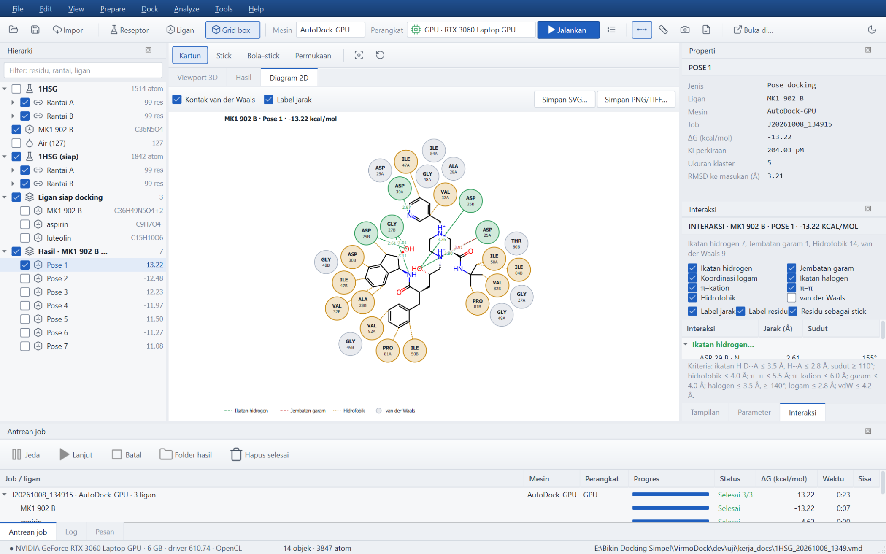
Simpan sebagai SVG/PDF (vektor, bisa diedit di Inkscape, Illustrator, Word) atau PNG/TIFF dengan DPI pilihan. Tombol Salin menaruh gambar di clipboard untuk langsung ditempel ke Word/PowerPoint.
Validasi redocking
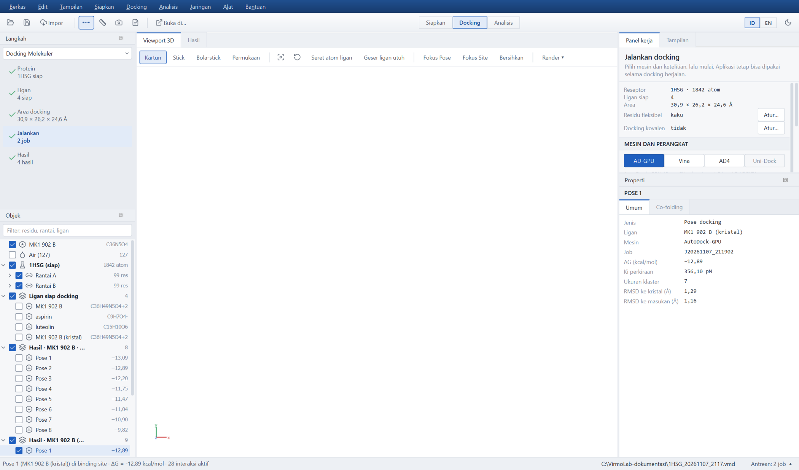
Docking › Validasi redocking… (juga di menu Analisis) men-docking ulang ligan kristal dengan parameter yang sama, dimulai dari konformasi kristal tanpa minimisasi, lalu menghitung RMSD pose terbaik terhadap kristal. RMSD ≤ 2,0 Å = metode valid. Hasil disimpan di proyek dan dikutip di laporan PDF. Lakukan sebelum menafsirkan hasil screening.
Pemeriksaan pose (PoseBusters)
Setiap pose terbaik diperiksa otomatis dengan PoseBusters (22 uji: geometri ikatan dan sudut, planaritas cincin, stereokimia, energi internal, jarak minimum ke protein, dll.). Hasilnya di kolom PoseBusters tab Hasil (arahkan tetikus untuk melihat uji yang gagal) dan di Properti pose. Analisis › Periksa pose aktif (PoseBusters)… menampilkan semua uji untuk pose mana pun.
Bandingkan ligan & peta interaksi
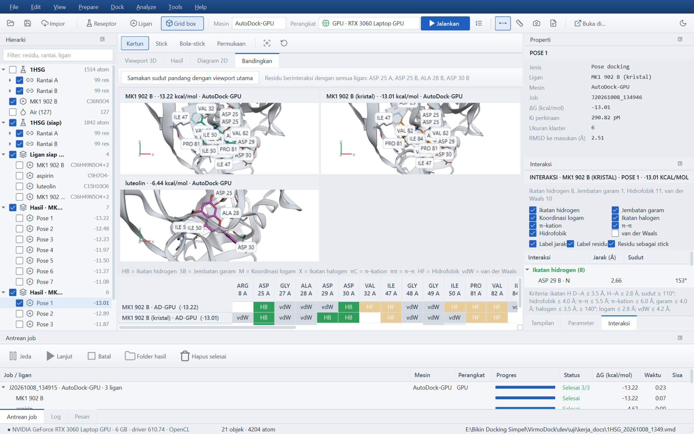
Viewport berdampingan (tombol Samakan sudut pandang), daftar residu yang berinteraksi dengan semua ligan, dan peta panas residu × ligan. Analisis › Peta interaksi residu × ligan menampilkan peta untuk semua hasil.
Sidik jari interaksi (IFP): tiap pose terbaik diringkas sebagai himpunan “residu × jenis interaksi” (tanpa vdW). Kolom IFP vs kristal di tab Hasil = kemiripan Tanimoto terhadap pose kristal ligan asli (1 = pola interaksi sama persis; berguna untuk memilih ligan yang meniru ligan asli). Tab Statistik › Kemiripan interaksi (IFP) menampilkan matriks kemiripan antar ligan; Excel berisi lembar Sidik jari interaksi (0/1 per residu × jenis).
Konsensus skor
Analisis › Konsensus skor… menggabungkan beberapa fungsi skor agar peringkat ligan tidak bergantung pada satu mesin saja. Centang kolom skor: job dengan mesin berbeda (mis. AutoDock-GPU dan Vina) dan/atau rescoring pose terbaik dengan fungsi skor Vina dan Vinardo (cepat, tanpa docking ulang; hasilnya disimpan di proyek). Tabel menampilkan ΔG dan peringkat tiap kolom, rata-rata peringkat (urutan konsensus), z-score rata-rata, dan tanda ✓ untuk ligan yang konsisten berada di persentil teratas (bawaan 20 %) di semua kolom. Kesepakatan antar fungsi skor dinilai dengan Kendall W (≥ 0,7 kuat; < 0,5 lemah — tafsirkan hati-hati) dan korelasi Spearman. Tersedia ekspor CSV dan paragraf metode siap tempel.
Sifat ligan & BOILED-Egg
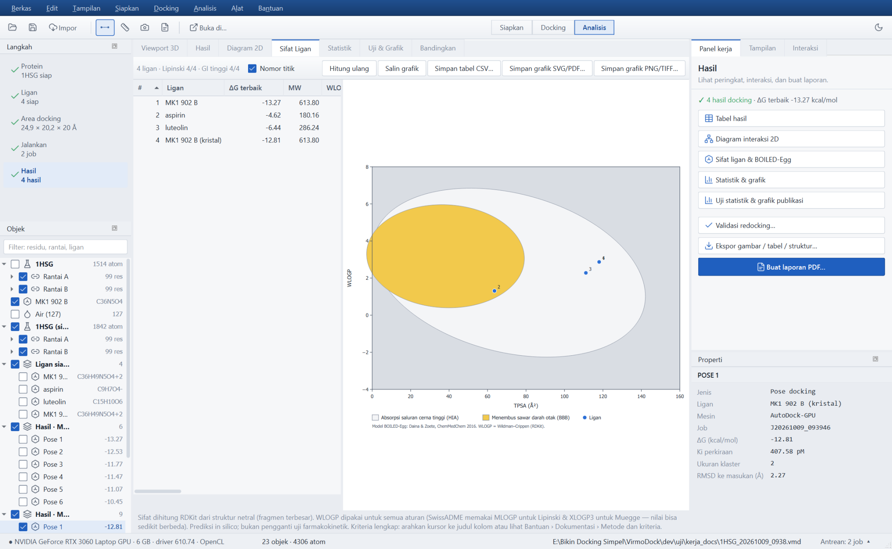
Analisis › Sifat ligan dan BOILED-Egg: MW, WLOGP, TPSA, donor/akseptor, ikatan rotasi, QED; aturan Lipinski, Ghose, Veber, Egan, Muegge; peringatan PAINS dan Brenk; grafik BOILED-Egg (perkiraan absorpsi usus dan penetrasi otak). Ekspor CSV atau grafik SVG/PDF/PNG/TIFF.
Statistik & grafik
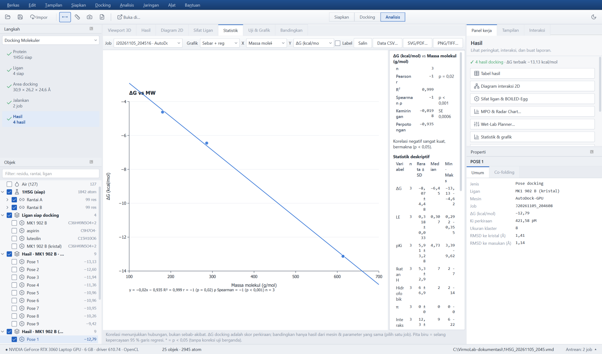
Analisis › Statistik dan grafik: histogram ΔG, diagram sebar dengan regresi dan korelasi Pearson/Spearman (beserta p), batang ΔG teratas, matriks korelasi antar variabel (ΔG, LE, pKi, interaksi, sifat ligan). Pilih job tertentu atau “Semua job”. Ekspor grafik dan data.
Uji statistik & grafik publikasi
Tab Uji & Grafik (Analisis › Uji statistik dan grafik publikasi) untuk data penelitian Anda sendiri, mis. hasil uji in vitro. Alurnya: lembar data → analisis → grafik, semuanya diperbarui otomatis saat data diubah dan tersimpan di proyek.
- Data Kolom: satu kolom per grup, baris = ulangan. Tempel langsung dari Excel (Ctrl+V; baris judul ikut terbaca), impor CSV, atau Isi data ▾ › ΔG per job / per mesin dari hasil docking. Klik dua kali judul kolom untuk mengganti nama.
- Uji otomatis memeriksa normalitas (Shapiro–Wilk) dan homogenitas varians (Brown–Forsythe), lalu memilih: 2 grup → t-test Welch / Mann–Whitney (berpasangan: t berpasangan / Wilcoxon); ≥ 3 grup → ANOVA + Tukey, ANOVA Welch + Games–Howell, atau Kruskal–Wallis + Dunn (Holm). Bisa juga dipilih manual, termasuk ANOVA + Dunnett terhadap kolom pertama (kontrol).
- Hasil: statistik deskriptif (n, rerata, SD, SEM, median, rentang), statistik uji, df, p, ukuran efek (Cohen d/Hedges g, η², ε², r), tabel uji lanjut, paragraf interpretasi dan paragraf Metode siap tempel (tombol Salin hasil & paragraf metode), serta peringatan bila asumsi tidak terpenuhi.
- Grafik: batang + titik, titik (rerata ± SD/SEM/CI 95%), kotak & kumis (Tukey), titik (median ± IQR); braket signifikansi otomatis bertingkat (ns/*/**/***/**** atau p eksak); palet Okabe–Ito (ramah buta warna), biru, atau abu-abu untuk cetak.
- Data XY dosis–respons: kolom pertama konsentrasi, kolom berikutnya ulangan respons. Regresi nonlinear 4 parameter (log[inhibitor] vs respons, kemiringan bebas) → IC₅₀/EC₅₀ dengan CI 95%, Hill slope, R²; grafik sumbu x logaritmik.
- Berpasangan ≥ 3 kolom (centang Berpasangan; baris = subjek yang sama): ANOVA pengukuran berulang dengan koreksi Greenhouse–Geisser, atau Friedman bila data tidak normal; uji lanjut t berpasangan / Wilcoxon.
- Koreksi perbandingan ganda dapat dipilih: Holm (bawaan), Bonferroni, Šidák, atau Benjamini–Hochberg (FDR) — dipakai Dunn, uji lanjut berpasangan, dan ANOVA dua arah.
- Data Dua faktor (ANOVA dua arah): kolom pertama = level faktor A (diulang untuk tiap ulangan), judul kolom berikutnya = level faktor B. Hasil: efek A, B, dan interaksi (jumlah kuadrat tipe III, η²ₚ), perbandingan antar level A di tiap level B, grafik batang berkelompok dengan legenda.
- Cek asumsi: tabel deskriptif kini memuat D'Agostino–Pearson (n ≥ 8) selain Shapiro–Wilk; pilih grafik Q–Q plot untuk memeriksa normalitas secara visual; kemungkinan pencilan dilaporkan dengan uji Grubbs (tidak dibuang otomatis).
- Model dosis–respons: Otomatis membandingkan 4PL (kemiringan bebas) dengan 3PL (Hill = 1) memakai uji F extra sum-of-squares dan AICc, lalu memakai model yang lebih sesuai; bisa juga dipaksa 4PL atau 3PL.
- Data ROC: kolom 1 = skor kelompok negatif (decoy/kontrol), kolom 2 = skor kelompok positif (aktif/kasus). Untuk ΔG docking pilih Skor rendah = positif. Hasil: AUC dengan CI 95% (DeLong), p, titik potong optimal (indeks Youden) beserta sensitivitas & spesifisitas, faktor pengayaan EF1%/5%/10%, BEDROC dan logAUC (pengayaan dini) dengan CI bootstrap — cocok untuk validasi penapisan virtual aktif vs decoy. Pilih tampilan: ROC, ROC semilog, atau kurva pengayaan.
- Data Kontingensi: kolom pertama = nama kelompok, kolom berikutnya = frekuensi tiap kategori (mis. Membaik / Tidak membaik). Tabel 2 × 2 → uji eksak Fisher, χ² Yates, rasio odds & risiko relatif dengan CI 95%; tabel lebih besar → χ² Pearson (otomatis Fisher eksak r × c bila frekuensi harapan kecil); Cramér V. Grafik batang bertumpuk 100%.
- Ekspor SVG/PDF (vektor), PNG/TIFF 600 dpi, Salin ke clipboard, atau ＋ Komposer untuk dijadikan panel figur.
Format grafik (klik elemen)
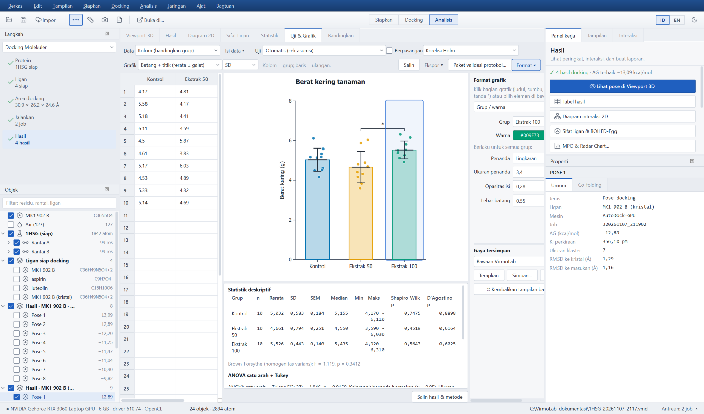
Panel Format di kanan (tombol Format ◂/▸) mengatur tampilan grafik. Arahkan mouse ke grafik: bagian yang bisa diformat disorot; klik untuk membukanya di panel — judul, label sumbu Y, sumbu Y (minimum, maksimum, jarak tik, skala log₁₀, patah sumbu untuk melompati rentang kosong bila satu grup jauh lebih besar), sumbu X (label, nama grup miring), grup (warna per grup, bentuk & ukuran penanda, opasitas, lebar batang), dan tanda signifikansi. Klik latar grafik untuk pengaturan umum (ukuran, huruf, tebal garis, palet, kisi, titik individual).
Garis acuan & anotasi: di halaman Sumbu Y isi Garis acuan, mis. −8,2=Ligan asli; −7 (garis putus-putus berlabel); di Grafik (umum) isi Anotasi (| = baris baru) dan pilih pojoknya.
Gaya tersimpan: simpan tampilan favorit (huruf, warna, ukuran, penanda) dengan Simpan…, lalu pakai di grafik lain dengan Terapkan — teks dan rentang sumbu tidak ikut berubah. Tersedia gaya bawaan: Jurnal hitam-putih, Kolom jurnal (ringkas), dan Presentasi (huruf besar).
Komposer figur (panel A/B/C)
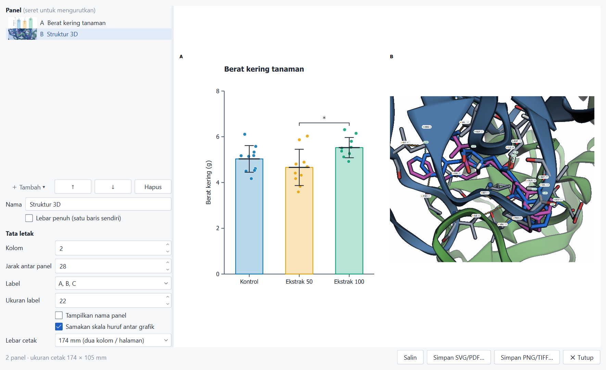
Analisis › Komposer figur (Ctrl+Shift+F) menggabungkan beberapa gambar menjadi satu figur jurnal berlabel A, B, C. Tambahkan panel dari ＋ Tambah ▾: grafik Uji & Grafik, grafik Statistik, diagram interaksi 2D, BOILED-Egg, gambar viewport 3D, atau berkas gambar (PNG/JPG/SVG). Urutkan dengan menyeret atau tombol ↑ ↓; centang Lebar penuh agar panel (mis. gambar 3D) memakai satu baris sendiri.
- Atur jumlah kolom, jarak antar panel, gaya label (A / a / (A) / (a) / A.), ukuran label, dan lebar cetak (85 / 120 / 174 mm).
- Samakan skala huruf antar grafik (bawaan) memperkecil semua grafik dengan faktor yang sama sehingga ukuran huruf seragam di seluruh figur.
- Simpan sebagai PDF/SVG vektor atau TIFF/PNG 600 dpi, atau salin ke clipboard. Isi komposer tersimpan di proyek.
Ekspor & laporan
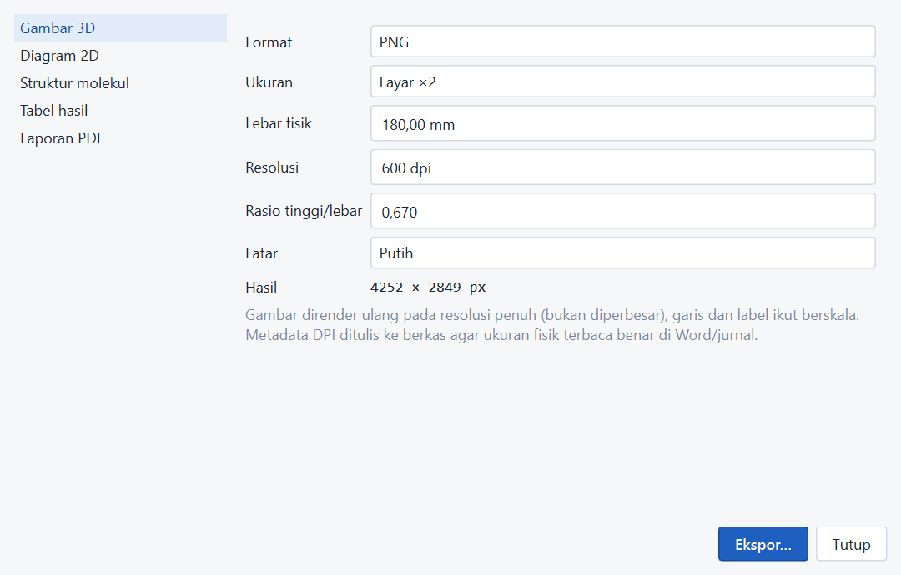
| Kategori | Isi |
|---|---|
| Gambar 3D | PNG, TIFF (LZW/tanpa kompresi), JPEG, WebP; preset jurnal 85/120/180 mm @ 600 dpi, slide 1920×1080/4K, poster; latar putih/transparan. Dirender ulang pada resolusi penuh; di atas 4096 px dirender per ubin lalu disatukan (maks. 16384 px). Pintasan Ctrl+Shift+S. |
| Diagram 2D | SVG/PDF vektor, PNG/TIFF ber-DPI. |
| Struktur | Kompleks PDB (reseptor + pose, ligan di rantai L), kompleks semua ligan, SDF bertag (ΔG, Ki, LE, RMSD, interaksi, SMILES), PDBQT. |
| Tabel | Excel (.xlsx: Ringkasan, Semua pose, Interaksi, Sifat ligan, Statistik, Parameter, Info) atau CSV (titik koma & desimal koma untuk Excel Indonesia). |
| Laporan | Validasi, reseptor, parameter & perangkat, hasil teratas, gambar 3D dan diagram 2D ligan terbaik, interaksi, PoseBusters, sifat ligan, metode, sitasi software. Tiga format: PDF (siap cetak), Word .docx (judul, tabel, dan gambar bisa disunting), dan HTML interaktif — satu berkas yang bisa dibuka offline di peramban mana pun: penjelajah 3D (klik baris tabel untuk melihat pose 30 ligan teratas beserta residu kontak dan garis interaksi; permukaan kantong, putar, simpan PNG), tabel hasil lengkap yang bisa dicari & diurutkan, dan laporan lengkap. Pintasan Ctrl+Shift+R. |
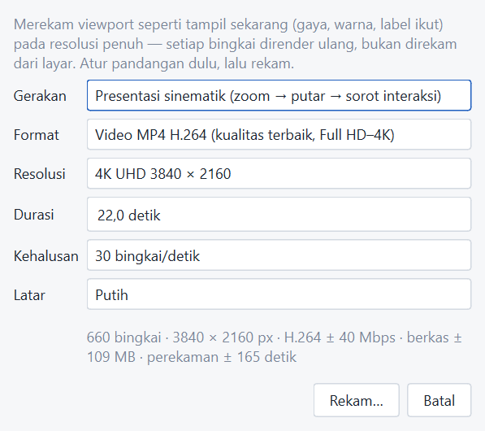
Berkas › Ekspor › Video / animasi 3D… merekam viewport seperti tampil sekarang: Putar 360°, Goyang ±30°, atau Zoom masuk ke situs pengikatan (beralih mulus dari seluruh protein ke pandangan saat ini). Setiap bingkai dirender ulang pada resolusi penuh (bukan rekaman layar), termasuk label residu. Format: Video MP4 H.264 — Full HD 1920×1080, 2K 2560×1440, 4K 3840×2160, kotak 1080×1080, atau tegak 1080×1920 (Reels/Story) pada 24/30/60 bingkai/detik, kualitas tinggi (4K30 ± 40 Mbps); cocok untuk PowerPoint, YouTube, dan media sosial. Rekaman 4K 8 detik butuh ± 1 menit. Juga tersedia GIF (WhatsApp/web, 256 warna), WebP animasi, dan folder bingkai PNG untuk editor video.
Label 3D (residu, jarak interaksi, pengukuran, kantong) digambar ulang pada resolusi kanvas yang sebenarnya — tetap tajam di layar HiDPI dan pada ekspor/video 4K. Label residu berbentuk pil: nama residu tebal, nomor abu-abu, dan titik warna jenis interaksinya.
Salin gambar (Edit › Salin gambar, Ctrl+Shift+C) menyalin isi tab yang terbuka — viewport 3D, diagram 2D, BOILED-Egg, atau grafik — ke clipboard untuk ditempel ke Word/PowerPoint.
Berkas › Ekspor › Sesi PyMOL / ChimeraX… menulis folder berisi reseptor, pose aktif, serta skrip .pml dan .cxc yang langsung menampilkan residu kontak (berlabel) dan garis interaksi berwarna sama dengan VirmoDock. Alat › Buka di program lain membuka sesi ini di PyMOL/ChimeraX bila ada pose aktif; selain itu mengirim objek yang tampil (juga ke Discovery Studio Visualizer).
MD & MM/GBSA
Analisis › MD & MM/GBSA… menyempurnakan pose docking terbaik dengan OpenMM: protein Amber ff14SB, ligan OpenFF Sage 2.3 (muatan NAGL setara AM1-BCC), pelarut implisit OBC2 atau air eksplisit TIP3P. Centang ligan (bawaan: 5 teratas), pilih tingkat, lalu Jalankan.
| Tingkat | Isi | Waktu (contoh RTX 3060 / CPU 8 inti, 1 ligan) |
|---|---|---|
| Ringan | Minimisasi kompleks + MM/GBSA satu titik | ±20 detik / ±40 detik |
| Sedang | MD pelarut implisit 1–2 ns + RMSD/RMSF + MM/GBSA rata-rata | ±15 menit / ±7 jam per 2 ns |
| Lengkap | MD air eksplisit 10–100 ns + MM/GBSA banyak frame | ±2,5 jam per 10 ns / tidak disarankan tanpa GPU |
- Saat dialog dibuka pertama kali, VirmoDock mengukur kecepatan laptop pada kompleks Anda (±30 detik) lalu menampilkan perkiraan waktu dan status Disarankan (< 2 jam), Bisa (lama) (2–12 jam), atau Tidak disarankan (> 12 jam). Hasil ukur disimpan per perangkat; Ukur kecepatan mengulanginya.
- Jeda menyimpan checkpoint; Lanjutkan meneruskannya kapan saja, juga setelah aplikasi dibuka ulang. Menutup VirmoDock saat MD berjalan otomatis menjeda dengan checkpoint. Colok laptop ke listrik untuk MD panjang.
- Hasil tampil di tab Ringkasan (ΔG docking, MM/GBSA setelah minimisasi, rerata MM/GBSA MD ± SD, komponen, RMSD ligan rerata), RMSD, RMSF, MM/GBSA per waktu, dan Interaksi persisten (persentase frame). ΔG MM/GBSA juga masuk ke kolom MM/GBSA tabel Hasil, Statistik, ekspor, dan laporan.
- Berkas di folder proyek
md/<id>/:hasil.json,kompleks_minimisasi.pdb,topologi.pdb+trajektori_terlarut.dcd(buka di PyMOL/VMD/ChimeraX). - Tafsiran: MM/GBSA tidak menghitung entropi, jadi angkanya jauh lebih negatif daripada ΔG eksperimen; gunakan untuk membandingkan ligan pada reseptor dan pengaturan yang sama. RMSD ligan rerata > 3 Å menandakan pose tidak stabil. Reseptor dengan ion logam memakai model nonbonded (pendekatan).
Baris perintah (VirmoDock-cli)
VirmoDock-cli.exe ada di folder instalasi VirmoDock. Buka Command Prompt di folder itu (atau tulis jalur lengkapnya), lalu misalnya:
VirmoDock-cli dock -r 1HSG -l kandidat.smi --acuan auto -o hasil_1hsg VirmoDock-cli dock -r AF-P00918 -l folder_ligan --kantong 1 --mesin vina -o hasil_ca2 VirmoDock-cli reseptor 1HSG -o rec.pdbqt --flex A:25,B:25 VirmoDock-cli info
- Perintah:
info,uji,reseptor,ligan,kantong(P2Rank),alphafold,dock,mmgbsa. Tambahkan-huntuk semua opsi. mmgbsa -r hasil_dock -o folder [--md --ns 2 --pelarut implisit|eksplisit]: MM/GBSA pose terbaik dari folder hasildock(atau-rberkas/kode PDB +-lpose SDF) →mmgbsa.csv.dockmenerima reseptor berupa kode PDB,AF-<UniProt>, berkas PDB/CIF, atau PDBQT siap; ligan berupa berkas, folder, atau teks SMILES. Area docking:--pusat X Y Z(+--ukuran),--acuan berkasatau--acuan auto(ligan asli), atau--kantong N.- Hasil: folder pose (DLG/PDBQT + SDF pose terbaik),
ringkasan.csv(ΔG, Ki, LE, ikatan H, hidrofobik, residu kontak),metode.txt(parameter + perintah yang bisa diulang persis),log.txt. Kode keluar 0 = minimal satu ligan berhasil.
Proyek, simpan otomatis, pemulihan
- Proyek adalah folder
Nama.vmdberisiproyek.json, reseptor, ligan, grid, dan hasil (log asli mesin selalu disimpan). Dibuat otomatis saat preparasi pertama; kelola lewat Berkas › Proyek baru / Buka proyek / Buka proyek terakhir / Simpan proyek (Ctrl+S). - Simpan otomatis setiap perubahan penting dan setiap 3 menit, dengan 5 cadangan terakhir di
.cadangan. - Bila VirmoDock tertutup tidak normal (listrik mati), saat dibuka lagi muncul tawaran Pulihkan pekerjaan terakhir.
- Alat › Buka folder proyek membuka folder proyek aktif di Explorer.
Pintasan keyboard
Daftar lengkap: Bantuan › Pintasan keyboard (Ctrl+/). Yang paling sering dipakai:
| Tombol | Aksi | Tombol | Aksi |
|---|---|---|---|
| Ctrl+O | Buka berkas struktur | F5 | Jalankan docking |
| Ctrl+Shift+P | Protein dari RCSB | Ctrl+J | Antrean job |
| Ctrl+Shift+L | Ligan dari PubChem | Ctrl+R | Tabel hasil |
| Ctrl+Shift+1 / 2 | Siapkan reseptor / ligan | Ctrl+D | Pengaturan docking |
| Alt+1 … 5 | Buka langkah 1–5 | Ctrl+1 / 2 / 3 | Ruang kerja Siapkan / Docking / Analisis |
| Ctrl+S | Simpan proyek | G | Tampil/sembunyi kotak area docking |
| Ctrl+E | Pusat ekspor | I | Interaksi 3D |
| Ctrl+Shift+R | Laporan (PDF/Word/HTML) | M | Ukur jarak (klik dua atom) |
| Ctrl+F | Cari objek/residu | F | Sesuaikan tampilan |
| Ctrl+T | Mode gelap/terang | F1 | Panduan ini |
| Ctrl+Shift+C | Salin gambar ke clipboard | K | Kontribusi energi per atom |
| Ctrl+Shift+F | Komposer figur |